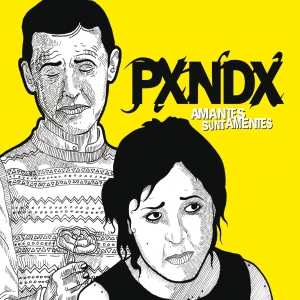

2000-2004: Arroz con Leche y La revancha del príncipe charro
En 2000 salió a la venta su primer álbum titulado Arroz con leche, que pasó
totalmente
desapercibido
para
los medios de comunicación y público en general. No fue sino hasta 2002 con su segundo
álbum
titulado La
revancha del príncipe charro, que se comenzaron a hacer medianamente conocidos, en parte
gracias
al
sencillo
Maracas el cual es un cover del compositor mexicano Joan Sebastian. Gracias al
"moderado"
éxito
de
su
segundo
disco, la disquera decide hacer una reedición de Arroz con leche, esta vez incluyendo un
VCD
con
todos
los
vídeos musicales del álbum y un nuevo arte.
A lo largo de las giras y en algunas presentaciones, a Jorge Garza "Ongi" se le
imposibilitaba
estar
presente
por motivos personales, con lo cual un joven guitarrista, amigo y conocido de Jorge
Vázquez
"Kross",
entró
en su
lugar para suplir el rol de guitarra líder momentáneamente mientras "Ongi" se encontraba
ausente. El
nombre
de
este guitarrista es Arturo Arredondo.
Después de varias giras de presentación de su segundo álbum por México y Estados Unidos,
la
banda
toma
un
descanso para componer su tercer disco. Fue entonces cuando Jorge Garza "Ongi", decide
dejar
el
grupo
definitivamente. Es así como Arturo Arredondo se convierte en miembro permanente del
mismo.
Cabe
destacar
que
durante este intervalo Pepe y Ricky trabajaron juntos en un proyecto llamado Magnolia y
Los
No
Me
Olvides
2005-2008: Para ti con desprecio, Amantes sunt Amentes y compilatorios
En 2005 la banda lanzó su tercer álbum Para ti con desprecio, en el cual,
principalmente
por iniciativa
del vocalista José Madero, el grupo da un giro completo a su estilo musical, abandonando
el
happy punk por
el que eran conocidos. Esto en parte debido a un suceso acontecido en la vida
sentimental
del
vocalista.
Debido al cambio de estilo, y a un naciente movimiento musical denominado Emo, (que
ganaría
fuerza y
popularidad meses más tarde), en el cual letras deprimentes y/o emocionales se mezclan
con
guitarras
estruendosas que identificaban mucho el sonido de Para ti con desprecio, la banda
comenzó a
ganar fama
internacional y a hacerse cada vez más presente en canales musicales, festivales de rock
y
medios de
comunicación en general, identificándoseles con este género. Acerca de esto, el
vocalista
José
Madero,
siempre se ha mantenido al margen argumentando que el grupo nunca incursionó ni se
sintió
identificado con
el Emo Rock, pero que tampoco está en contra del mismo. Por otra parte, debido a este
cambio
brusco de
estilo, el grupo también ganó cierto número de detractores, principalmente seguidores de
sus
dos
primeros
álbumes. Sin embargo, la oleada más fuerte de detractores vendría unos meses después,
cuando
una
revista
mexicana expuso varios temas musicales de la banda, los cuales mostraban ciertas
coincidencias
con canciones
de grupos anglosajones tanto musical como líricamente, con lo cual varios medios de
comunicación
los
acusaron de plagio, formándose un movimiento de detractores llamado Anti-Panda.
A pesar de toda la controversia suscitada, meses después en ese mismo año, fueron
nominados
a
una de las
lenguas de MTV Video Music Awards Latinoamérica, en la categoría de mejor artista
independiente,
consiguiendo el premio.
Más tarde, a principios de 2006, el grupo grabó el tema «No te deseo el mal... pero
tampoco
te
deseo el
bien» el cual fue realizado para la banda sonora de la película Un mundo maravilloso,
aunque
al
final por
motivos no aclarados, la canción no apareció en la película.
2006: Amantes sunt Amentes

El 2 de octubre de 2006, a un año del lanzamiento del álbum Para ti con desprecio,
el
grupo
decide lanzar su cuarto álbum de estudio Amantes sunt amentes que proviene del latín que
significa «Los Amantes son dementes», aunque en principio se tenía planeado titular Del
amor
y
otros demonios tal y como se titula una famosa obra literaria del escritor Colombiano
Gabriel
García Márquez. Sin embargo ante la imposibilidad de encontrar al escritor para contar
con
su
permiso y con la finalidad de no hacer "más grande" la controversia por la que se
encontraba
pasando el grupo en esos momentos, deciden dar marcha atrás con la idea y buscar otro
nombre
para el álbum, esto según ha dicho José Madero en numerosas ocasiones. Este corto tiempo
de
lanzamiento entre el tercer y el cuarto álbum de estudio, se debió principalmente para
hacer
frente a las críticas recibidas por los supuestos plagios de los cuales fue acusado el
grupo.
Sobre el sonido del álbum, el grupo nos presenta un rock alternativo más estético y
menos
ruidoso pero más oscuro que en su disco anterior, mezclado con sintetizadores y letras
deprimentes, consiguiendo con esto, aumentar la fama del grupo dentro del movimiento emo
aunque
realmente no lo fuere. Su primer sencillo promocional fue «Narcisista por excelencia»,
que
fue
lanzado en septiembre de 2006.
El 25 y 26 de noviembre de 2006 la banda grabó su primer álbum en vivo desde el
Auditorio
Nacional de México, el cual titularon Sinfonía Soledad. Por otra parte, en el conteo
especial de
la cadena MTV Latinoamérica titulado Los 100 + pedidos transmitidos en la última semana
del
año,
su canción «Disculpa los malos pensamientos» obtuvo el primer puesto. En ese mismo año,
a
petición del canal infantil Nickelodeon, el grupo graba una canción titulada "Si esto
fuese
realidad" para la serie mexicana Skimo, junto a otros grupos del momento como Motel, los
cuales
compusieron el tema principal de la misma. Dicha canción al ser compuesta para un show
infantil,
contrasta el estilo que había venido manejando la banda en los últimos años, recordando
aquellos
ritmos alegres de su primer disco.
Un año más tarde en Los Premios MTV Latinoamérica 2007, el grupo fue nominado a las
categorías
Mejor grupo o dúo, Vídeo del año por el vídeo «Los malaventurados no lloran» y a Mejor
artista
alternativo, ganando esta última categoría.[cita requerida]
El tercer sencillo de Amantes sunt amentes, «Procedimientos para llegar a un común
acuerdo»
se
estrenó el 30 de julio durante el programa Los 10+ Pedidos del canal MTV.
2007: Sinfonía Soledad
El álbum se basa en una recopilación de las principales canciones de la banda
grabadas
los
días 25 y 26 de noviembre de 2006 en el Auditorio Nacional, en la Ciudad de México. Así
mismo,
contiene los temas " Nunca Nadie Nos Podrá Parar (Gracias)* ", la cual es una muestra de
agradecimiento a su público, y " No Te Deseo El Mal... Pero Tampoco Te Deseo El Bien* ",
la
cual
se incluyó en el soundtrack del filme mexicano "Un Mundo Maravilloso".
Mucho se habló de este CD-DVD. El disco incluye otras 16 canciones en vivo del evento de
dos
días en el Auditorio Nacional en la Cd. de México, que se llevo a cabó en noviembre del
2006.
Las canciones son una selección de lo que ese día se tocó, pretende ser un concierto que
puedas
cargar a todos lados, con este material Panda se coloca en el nº 1 como disco más
vendido,
no
siendo este un disco novedoso sino uno en vivo.
Este disco destaca mucho porque el concierto estuvo integrado por diversos instrumentos
aparte
de los de ellos, con la participación de Marcelo Treviño en los teclados, iniciando el
concierto
con elIntro de este concierto y violines a cargo de la entonces conocida Orquesta
Soledad.
Además del CD, el álbum incluye un DVD con la interpretación en vivo de las canciones
incluidas
en el álbum, siendo el quinto CD lanzado por la banda.
2009-2011: Poetics
Es el quinto álbum de Panda. Su lanzamiento fue el 22 de septiembre de 2009. Su
proceso
de
grabación fue distinto a los anteriores, ya queJosé Madero viajó a Estados Unidos para
estar
en
soledad y así poder escribir las letras que lo compondrían; acompañado de una guitarra y
su
voz
hizo grabaciones, las cuales enviaba al resto de la banda por correo electrónico para
que
cada
quien le añadiera su toque a las canciones.
Es la representación de la tentación y de todo lo malo, sin mencionar que 2 de las
canciones
tratan sobre el punto de vista de Pepe hacia el fin de los tiempos (popurri para ti y
espejismos
y visiones).
Portada del discoEn la portada externa del disco, se puede ver una mujer recostada que
representa a Eva en el Jardín del Eden; detrás se puede ver el Árbol del Fruto Prohibido
en
el
que hay 6 manzanas terminadas. En la portada interna se pueden ver 7 mujeres que
representan
los
pecados capitales.
Reaccion de los FansLa mayoria de los fans de Panda consideran este disco como una obra
de
arte
por parte del grupo, dado que se incluyen canciones psicodelicas y un poco mas rudas. El
resto
de los fans consideran este disco como una "Total Basofia" Dado que este disco no
representan
las raices de las cuales nacio el grupo, y fueron un poco menos directos en su musica,
para
muchos, ya no es lo mismo ver a Panda como PXNDX, esa es la nueva transicion del grupo.
2010: Panda MTV Unplugged
Es un álbum en vivo de la banda mexicana de Rock Alternativo Panda, que fue lanzado el
23
de noviembre de 2010. El álbum muestra otra faceta de la banda, siendo grabado el 6 de
octubre
del mismo año en los estudios Churubusco de la Ciudad de México totalmente en acústico. El
álbum
cuenta con 13 canciones. Dos de éstas inéditas, siendo "Feliz Cumpleaños" primer sencillo
promocional, cuyo video oficial fue estrenado en MTV Latino-américa el miércoles 3 de
noviembre
de 2010 y "Sistema Sanguíneo Fallido", la cual cuenta con la colaboración de Denisse
Guerrero,
vocalista del grupo de Pop Belanova. Los covers incluídos en éste Unplugged, son "El
Monstruo
Comeastronautas" y "Hombre de Lata" siendo ambas composiciones de "Bucho" viejo amigo de la
banda. Los restantes 9 tracks, son versiones totalmente nuevas de los grandes éxitos de la
banda. Panda MTV Unplugged fue transmitido el viernes 26 de noviembre de 2010, por el canal
de
videos MTV Latinoamérica a las 8:30PM, 3 días después del lanzamiento del álbum el cual
contiene
CD y DVD.
2012: Bonanza
A finales de 2011, Panda confirma la grabación de su siguiente álbum de estudio, el
cual a
manera de broma, el vocalista José Madero expresó en su cuenta de Twitter que llevaría por
título Taco de frijoles, en el cual el grupo regresaría a sus raíces y a su estilo clásico
de
punk pop como en los primeros dos álbumes.
Más tarde se supo, que el álbum se llamaría Bonanza, que contendría 13 canciones y que a
pesar
de que el estilo iba a recordar aquellos sonidos "más amigables" que manejó el grupo en sus
dos
primeros álbumes, la temática de las letras seguiría por la misma línea de sus últimos
discos.
Éste en particular, se centraría en José Madero y sus experiencias fallidas.
El 16 de marzo de 2012 fue lanzado el primer sencillo "Envejecido en Barril de Roble"
mientras
que el 29 de junio de 2012 se lanzó el segundo sencillo "Romance en Re Sostenido". En cuanto
al
lanzamiento de todo el disco, este se vio retrasado por problemas internos entre el grupo y
su
disquera en ese entonces, Movic Records, la cual venía frenando al grupo tanto en el
lanzamiento
del álbum como en fechas para la gira. Incluso se planteó grabar otro disco con canciones
nuevas
y sacarlo con el nombre Bonanza, el cual estaría libre de los derechos de autor de Movic al
acabarse el contrato firmado entre el grupo y la disquera en 2012, y "guardar" el verdadero
Bonanza para un lanzamiento posterior, según cuenta José Madero en su primer libro,
Pensándolo
bien, pensé mal. Finalmente, a pesar de todos los problemas entre el grupo y la disquera, el
álbum pudo salir a la venta ese año. Debido a estos problemas, la disquera le dio casi nula
promoción tanto al disco como a la gira que emprendiera el grupo ese año, por lo que el
álbum y
en general el grupo pasaron desapercibidos por esas fechas, decrementando aún más la
popularidad
de este último.
Finalmente, al salir el álbum a la venta, muchos fanes coincideron que más que regresar a
sus
raíces, el álbum mostraba un sonido de un Panda menos producido y más crudo, pero que no se
acercaba al sonido clásico que el grupo había prometido, siendo más otra cara de la banda
que un
Back to roots. A pesar de todo, el álbum se hizo disco de oro en pocas semanas.
Poco después de que se diera a conocer el lanzamiento del disco, también se anunció la
salida de
Marcelo Treviño tecladista de la banda.
2013-2014: Sangre Fría
A un año del lanzamiento de Bonanza, el grupo anunciaba que entraría a grabar el que
sería
su séptimo disco de estudio. La razón principal del poco tiempo entre un disco y otro, fue
la
firma de su nuevo contrato discográfico, ahora con Universal Music al terminarse en 2012 el
firmado con Movic Records y que estuvo vigente por casi 13 años, ya que el no tener contrato
nuevo asegurado, podría congelar los proyectos de la banda por años, según expresó el
vocalista
José Madero en varias entrevistas. Más tarde en 2013, se anunció que el álbum llevaría por
nombre Sangre Fría.
El primer sencillo del disco, llevó por nombre "Enfermedad en casa" y se estrenó el 1 de
octubre
en Estaciones de Radio. El 8 de octubre se estrenó una versión promocional del álbum a
través de
la campaña de promoción de Pepsi y el grupo, el cual contenía 10 canciones.
Ese mismo 2014 la banda es invitada para presentarse en el festival Vive Latino sin embargo
debido a que la banda tenía programadas hacer 2 fechas en el auditorio nacional, la
propuesta de
aparecer en dicho festival tuvo que ser rechazada. (Desde el 2008 el grupo no toca en el VL
y
los han invitado 2 veces más, la primera no pudieron por promoción del unplugged).
El disco completo fue puesto a la venta en formato físico el 13 de diciembre, formado por 14
canciones y un DVD de grabación en estudio así como partes del tour de Bonanza. El 22 de
enero
de 2014 se estrenó el segundo sencillo, llamado "Saludos desde Turquía" por estaciones de
radio
de la república mexicana. Su tercer sencillo se estrenó el 8 de agosto de 2014, llamado
"Usted"
en todos los medios, Internet y televisión. Su cuarto sencillo fue "Libre pastoreo" que se
estrenó el 12 de diciembre de 2014.
En cuanto al sonido del disco, se puede notar un Panda más ruidoso y más rápido que en sus
dos
álbumes anteriores, además de contar con un sonido variado, que recuerda todos y cada uno de
sus
álbumes. Ante esto, José Madero ha expresado que el disco podría considerarse una mezcla
entre
Bonanza y Para ti con desprecio, dando como resultado, a opinión de muchos fans, algo muy
parecido a lo que el grupo quería lograr con Bonanza y que al final no se logró del todo en
éste.
Muchos fans consideran a Sangre Fría como un viaje por los sonidos que manejó la banda en
cada
álbum, logrando ese sonido característico del grupo que el mismo intentó plasmar con
Bonanza, no
sin meter un toque de innovación respecto a los anteriores discos. Gracias a esto y a la
promoción pactada con la refresquera Pepsi, el grupo recuperó considerablemente la
popularidad
que había venido perdiendo en los últimos años. Curiosamente este "popurrí" de sonidos
terminó
siendo el último álbum de la banda antes de anunciar su descanso indefinido en 2016.
Durante más de un año la banda estuvo promocionando el disco con su gira llamada Sangre Fría
Tour que terminó el 28 de marzo de 2015 en Mexicali, Baja California.